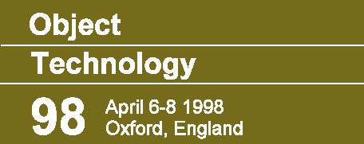

Christ Church
college, the base of the OT conferences. |
Patterns
Components
Architectures
|
|
Join Europe's leading experts
to explore contemporary software practice
|
|
|
 1998
Programme 1998
Programme
This
year's programme
Organisation
People
|
Object
Technology
98April 6-8 1988, Oxford UK" HEIGHT=180 WIDTH=450>
with, sponsored by BT Laboratories, the
Colloquium
on Object Technology and System Re-engineering |
|
|
|
The Object Technology conference, now in its sixth year, is firmly
established as the most effective annual exchange of skills and ideas in
Europe.
OT9x breaks the mould of hype-led, non-interactive, vendor-influenced
conferences. Its working, participative sessions
ensure it is the most effective conduit for practical knowledge, and the
most exciting event on the conference calendar. Careful planning ensures
that the OT conference retains the productivity and cohesion for which
it is famous. |
| Programme |
This year's programme once again addresses
the most pressing concerns of software developers. The big themes are:
-
Patterns
-
Intro --- pattern languages --- process patterns --- teaching patterns
--- patterns for distributed systems
-
Components and reuse
-
Java Beans --- reuse --- Business object frameworks --- modelling and designing
--- reliability
-
Distributed architectures
-
CORBA --- ORBs --- middleware --- low-risk change --- large-scale trading
systems --- patterns & styles --- performance
-
Design techniques
-
UML --- Java --- Managing change --- Performance engineering --- -- Object
discovery --- Transformational design --- concurrency
-
Process and management
-
Group working --- team structure --- metrics --- task decoupling --- failure
modes
In addition to the scheduled events, you are strongly
encouraged to set up meetings at the conference, on any topic you are
interested to talk about. And, as always, a programme of pleasant evening
entertainment will be laid on. |
| Sponsors |


|
|